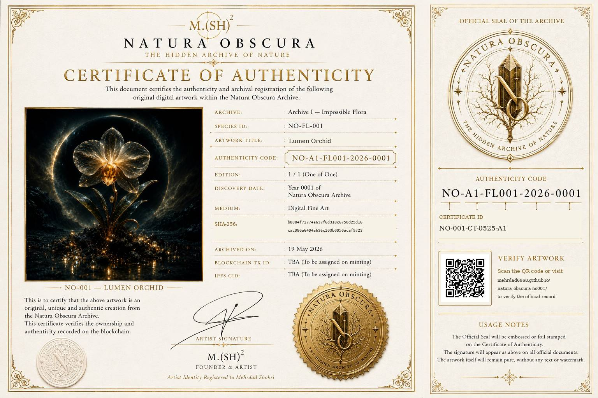

NATURA OBSCURA
VERIFY
THE HIDDEN ARCHIVE OF NATURE
Original Artwork
Official original artwork associated with Natura Obscura — NO-001.

Cryptographic Identity
The following SHA-256 fingerprint represents the cryptographic identity of the archived original digital artwork associated with Natura Obscura — NO-001.
SHA-256
b8884f72774a637f6d318c6758d25d16cac980a6494a636c203b0950acaf9723
Official Record
Project
NATURA OBSCURA
Artwork ID
NO-001
Artwork Title
Lumen Orchid
Scientific Name
Orchidalis lumen obscura
Edition
1 / 1 — One of One
Medium
Digital Fine Art
Archive
Archive I — Impossible Flora
Authenticity Code
NO-A1-FL001-2026-0001
Certificate ID
NO-001-CT-0525-A1
Artist
Mehrdad Shokri
Official Certificate
Official Certificate of Authenticity associated with Natura Obscura — NO-001.

Verification Record
This page is the official verification record for Natura Obscura — NO-001.
https://mehrdad6968.github.io/natura-obscura-no001/